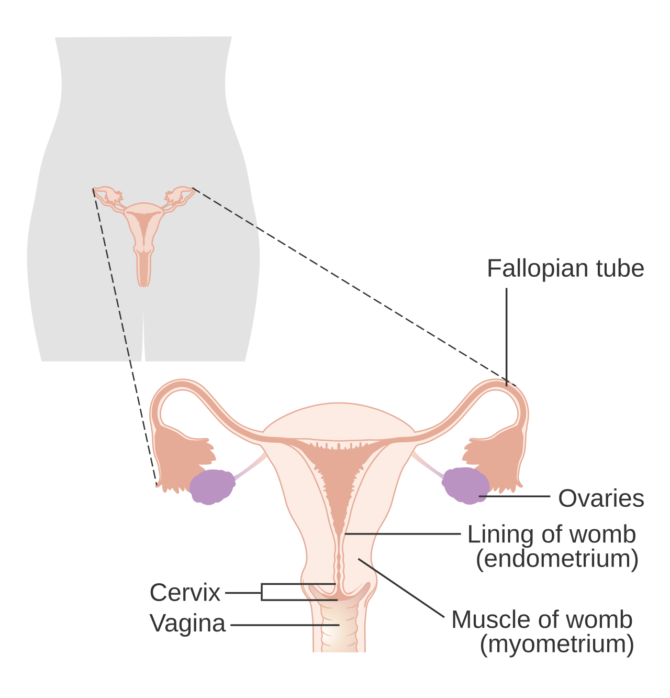
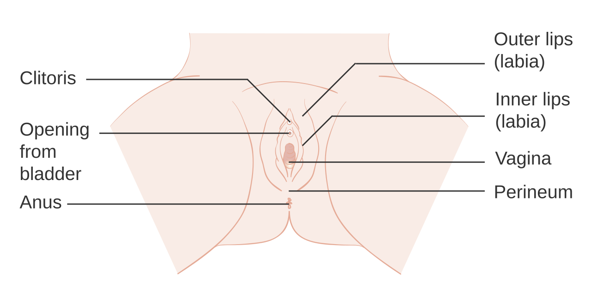
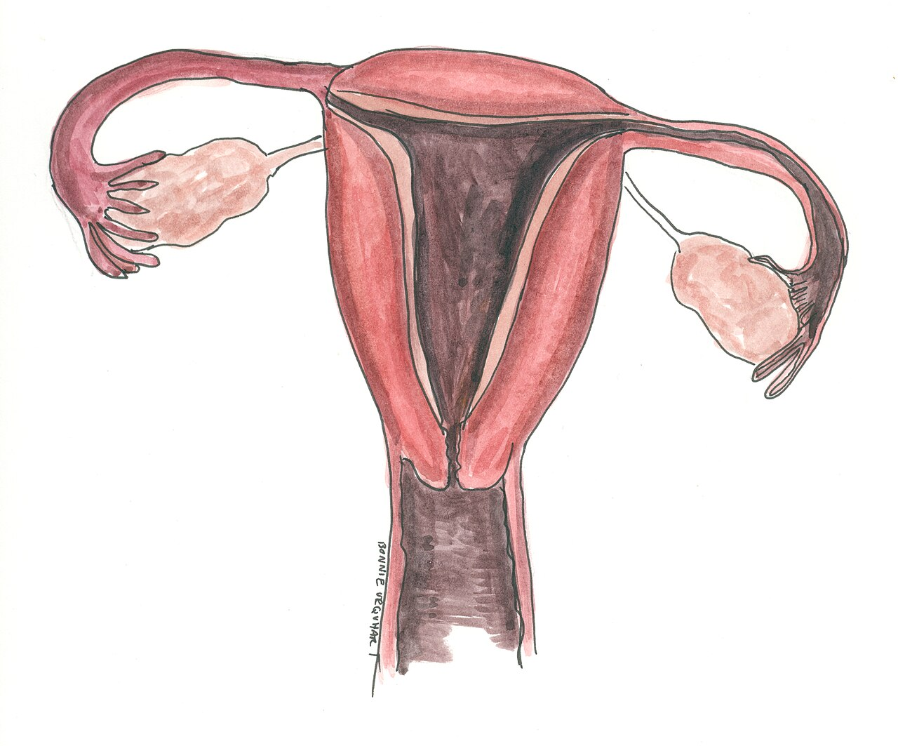
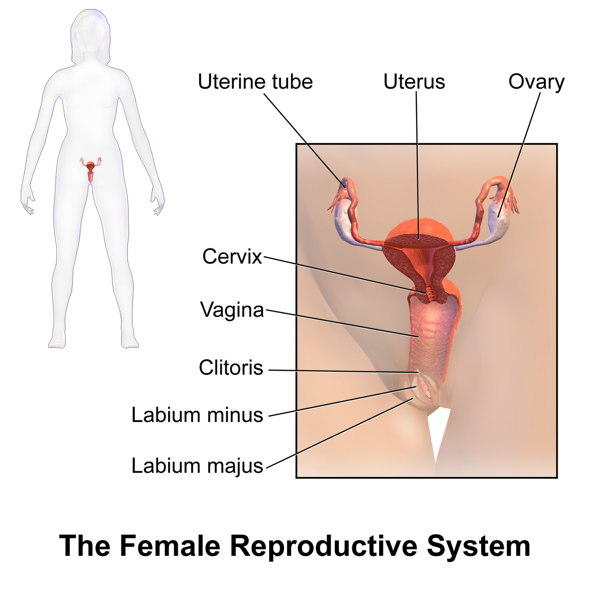
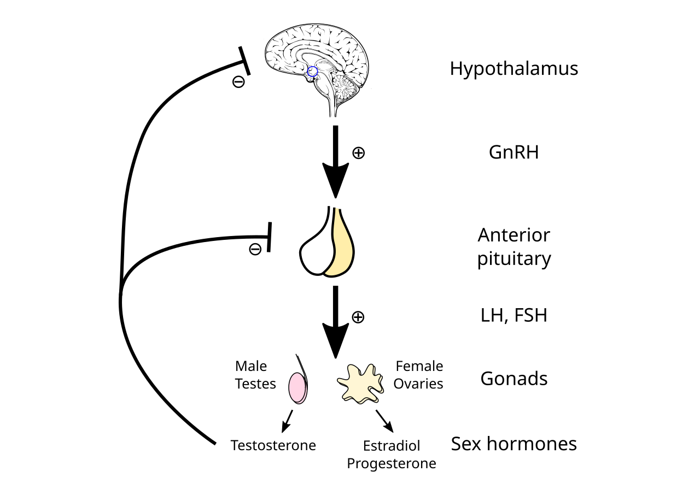
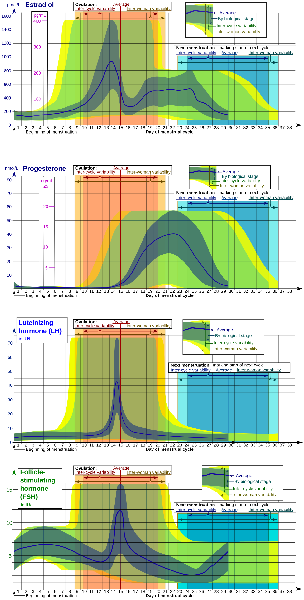
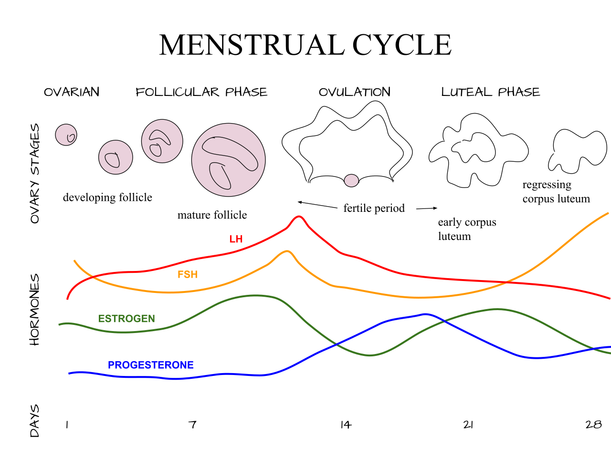

Curso: Anatomía Básica
Tema: Sistema Reproductor Femenino
Docente: Mc. Jesús Marcelo Macedo Hidalgo
Integrantes:
Ana Pashanasi Romero · Erika Panaifo Torres · Dayane Naomi Paredes Del Castillo
Keyla Inga Murayari · Guisella Rengifo Arimuya · Oliver Murayari Murayari
Yurimaguas — 2026
Anatomía externa e interna, órganos genitales, control hormonal y ciclo menstrual.

Agosto 2026
Conjunto de órganos encargados de la producción de gametos (óvulos), el transporte del embrión y el desarrollo del nuevo ser durante la gestación.
Órganos reproductores femeninos · C. Vallance, Leiden UMC (Sketchfab, CC BY 4.0)
El sistema reproductor femenino se divide en órganos genitales internos (ovarios, trompas de Falopio, útero y vagina) y órganos genitales externos (vulva). Participa además en el control hormonal del ciclo menstrual.
Los ovarios producen y liberan el ovocito secundario durante la ovulación mediante el proceso de oogénesis.
Sintetiza estrógenos y progesterona, que regulan el ciclo menstrual y preparan el endometrio.
Las trompas de Falopio captan el óvulo y lo conducen hacia el útero; aquí ocurre la fecundación.
El útero aloja, nutre y protege al embrión y al feto durante el embarazo.
La vagina comunica el útero con el exterior y constituye el canal blando del parto.
La vulva (pudendo) comprende el monte de Venus, los labios mayores y menores, el clítoris, el vestíbulo y las glándulas de Bartolino. Protege el meato uretral y el orificio vaginal.
Genitales externos femeninos · Gonzalo Matzner (Sketchfab)

El clítoris es un órgano eréctil homólogo del pene; posee la mayor densidad de terminaciones nerviosas del cuerpo humano.
Glándulas pares del tamaño de una almendra, situadas en la fosa ovárica, a ambos lados del útero. Producen los ovocitos y secretan estrógenos, progesterona, inhibina y andrógenos.
Pelvis ósea y órganos pélvicos (RM) · A. Byrd (Sketchfab)
En la pelvis menor, en contacto con las trompas y ligados al útero por el ligamento ovárico propio.
Folículos en distintos estadios (primordial, primario, secundario, de Graaf) que albergan a los ovocitos.
Alrededor del día 14 del ciclo, el folículo maduro se rompe y libera el ovocito secundario hacia la trompa.
Tras la ovulación, el folículo se transforma en cuerpo lúteo, que secreta progesterona.
Conductos pares de unos 10–12 cm que comunican los ovarios con el útero. Son el sitio habitual de la fecundación y transportan al embrión hacia la cavidad uterina.
Sistema reproductor femenino · C. Vallance (Sketchfab, CC BY 4.0)
Infundíbulo (con fimbrias), ampolla (donde ocurre la fecundación), istmo y porción intramural.
Los cilios y los movimientos peristálticos desplazan al ovocito y al cigoto hacia el útero.
El embarazo ectópico tubárico es la implantación fuera del útero; urgencia médica.
Órgano muscular hueco, en forma de pera invertida, situado en la pelvis menor entre la vejiga y el recto. Aloja al feto y expulsa al bebé durante el parto.
Anatomía estándar del útero · Univ. de Dundee, CAHID (Sketchfab)
Fondo (superior), cuerpo (porción media) y cuello o cérvix (inferior).
Perimetrio (serosa), miometrio (músculo liso, esencial en el parto) y endometrio (mucosa que se descama en la menstruación).
Adulto no gestante: ~7–8 cm de longitud y ~50–70 g de peso.

El corte coronal del útero revela su cavidad triangular, el canal cervical y el grosor de sus tres capas. Las imágenes 3D permiten "disecar" virtualmente el órgano.
Corte de los órganos reproductores · C. Vallance (CC BY 4.0)
Triangular, con el vértice inferior en el orificio cervical interno.
Conecta el cuerpo uterino con la vagina a través del canal cervical.
Su grosor varía con las fases del ciclo (proliferación, secreción y menstruación).

Conducto fibromuscular elástico de 8–10 cm que se extiende del cérvix al vestíbulo. Es la vía del flujo menstrual, el órgano copulador femenino y el canal del parto.
Sistema reproductor femenino · Flarar (Sketchfab)
El pH ácido (3.8–4.5), mantenido por los lactobacilos, protege contra infecciones.
Mucosa con epitelio escamoso estratificado, capa muscular y adventicia.
Recesos alrededor del cérvix; el fórnix posterior se relaciona con el fondo de saco de Douglas.
Se evalúa con el espéculo y el tacto vaginal; la cérvix se inspecciona en el Papanicolaou.
El eje hipotálamo–hipófisis–ovario regula el ciclo mediante retroalimentación (feedback) positivo y negativo.
FSH: estimula el crecimiento folicular. LH: dispara la ovulación. Estrógenos: proliferan el endometrio. Progesterona: lo mantienen y secretan.


Proceso cíclico de ~28 días que prepara al organismo para un posible embarazo. Incluye el ciclo ovárico y el ciclo uterino.

Días 1–5. Descenso de hormonas; se desprende el endometrio.
Días 6–13. Estrógenos regeneran el endometrio; crece el folículo.
Día ~14. Pico de LH; se libera el ovocito.
Días 15–28. Progesterona; endometrio secretor, listo para la implantación.
Un folículo se vuelve dominante y madura bajo la influencia de FSH y estrógenos.
El cuerpo lúteo secreta progesterona; sin fecundación, degenera en cuerpo albicans.
La caída de progesterona y estrógenos desencadena la menstruación y comienza un nuevo ciclo.
El ciclo inicia en la menarquia (11–15 años) y finaliza en la menopausia (~45–55 años).
Los órganos del sistema reproductor femenino trabajan de forma coordinada para producir gametos, regular las hormonas y permitir la gestación.
Referencias de modelos 3D (Sketchfab, CC BY / uso educativo):
· C. Vallance / Leiden UMC — Órganos reproductores femeninos (vista y corte) y sistema reproductor + urinario.
· Gonzalo Matzner — Genitales externos femeninos. · A. Byrd — Pelvis ósea y órganos pélvicos (RM). · Flarar — Sistema reproductor femenino. · Univ. de Dundee, CAHID — Anatomía estándar del útero.
Sistema Reproductor Femenino
Anatomía y Fisiología · Carrera de Enfermería
Agosto 2026